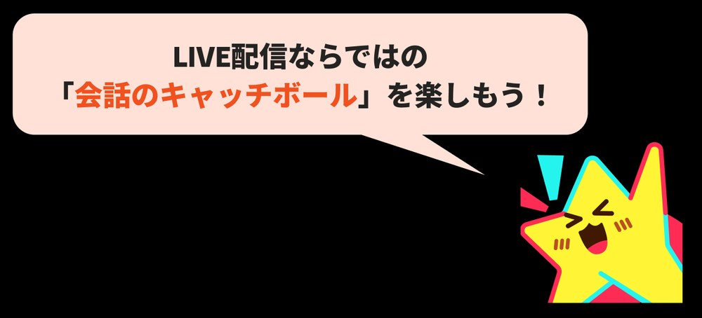

配信前に差がつく基礎攻略コンテンツ03/ 03
初見の心をつかむ「最初の一言」と会話の広げ方
歓迎 → コメントのきっかけ → みんなの会話へ。初見を置いてけぼりにしないコミュニケーション術。
- ゆうさんが入室しました
- 配信者ゆうさん、いらっしゃい！
- 配信者ゆう…って読み方で合ってる？
- ゆう合ってます！
- 配信者よかった！今ちょうど好きなおにぎりの具の話してて…
- みかわたしは鮭派！
- たくツナマヨ一択
- 1人
- 配信者と
- 枠全体へ
このコンテンツで学べること
自然な迎え方
初めて来た人に「あなたに気づいています」と伝える、4つの入口。
LIVEに効く理由名前呼びだけに頼らず、相手や場面に合う迎え方を選べます。
答えやすい一言
場面に合わせて、コメントしやすいきっかけを1つ添える方法。
LIVEに効く理由一言書き込みやすい雰囲気ができると、会話のキャッチボールが生まれます。
会話の広げ方
返ってきたコメントを拾い、少し深掘りして、みんなの話題へ広げる流れ。
LIVEに効く理由2人だけの会話に閉じず、ほかの視聴者も入りやすくなります。
学んだ先に変わること
- 身につけること迎える一言と、きっかけを用意する
- 視聴者の反応初見が置いてけぼりにならない
- LIVEの変化会話が 1人 → 配信者 → 枠全体へ広がる
- その先初見が常連になる入口ができる
ひと目でわかる全体像
初見対応は、この3つ
初見（しょけん）＝あなたのことをまだよく知らない、初めて来た視聴者のことです。
STEP01自然に迎える
「あなたに気づいています」と伝えて迎える
入室してくれた視聴者を、自然に迎えます。
なぜ大事？
ライブ配信の醍醐味は、画面越しに生まれるリアルタイムな繋がりです。「自分に気づいてくれた」という喜びが、ファンとしての第一歩になります。
大切なのは名前を呼ぶことではなく、「あなたに気づいています」と伝えること。
名前呼びは、そのための手段の1つです。入口は4種類あります。
名前で迎える
「○○さん、いらっしゃい！」
読み方を確認する
「○○さん…で読み方合ってる？」
名前が読みづらいときに使います。これ自体が、自然なコメントのきっかけになります。
注意: 毎回わざと間違えない。
アイコンから会話の糸口を作る
「アイコンの猫かわいいね！」
使うのは、見えている情報だけです。
注意: 居住地・年齢・家族・外見・属性など、私的なことを推測しない。
枠全体で歓迎する
「いらっしゃい〜」
常連の視聴者が自然に迎えてくれる文化を作ります。配信者だけでなく、みんなで新しい人を迎える枠へ。
注意: 一斉に大量のメンションで圧をかけない。新しい人に返答を強制しない。
ここが要点
最初の5分が大事
配信がスタートしてからの5分間は、視聴者が「あ、この配信、居心地がいいな」と感じるためのゴールデンタイムです。
BEFORE
名前だけの自己紹介
- 「こんにちは、〇〇です」
AFTER
どんな配信かが伝わる一言を添える
- 「今日も皆さんの夜を楽しいおしゃべりで満たす、元気いっぱいなクリエイターの〇〇です！」
初見の視聴者は、配信のどのタイミングで入ってくるか分かりません。一言添えておくと、「楽しそうな場所だな」と一瞬で伝わります。
STEP02答えやすい一言
挨拶のあとに、答えやすい一言を添える
挨拶のあとに、答えやすい一言を優しく1つ添えます。
なぜ大事？
コメント欄に一言書き込みやすい雰囲気ができると、会話のキャッチボールが生まれます。
今している話題へ巻き込む
「ちょうど○○の話してたんだけど、○○派？」
名前から
「○○さんって読み方で合ってる？」
アイコンから
「その猫アイコンかわいいね！」
イベント中
「今日初めて来てくれた？今ちょうどイベント挑戦中なんだ〜」
1つの型を全員に使いません。質問攻めにもしません。
日常の軽い話題も、きっかけの1つ
今日のご飯は何食べた？
今週もお疲れ様！
BADやりがち
「初見さんですね。どちらから来ましたか？趣味は何ですか？」
GOODこう変える
「○○さん、いらっしゃい！今ちょうど○○の話してたんだけど、○○派？」
なぜ良い？質問を連発せず、答える負担の低い一言になっています。
STEP03コメントを拾って会話へ
返ってきたコメントを拾って、会話にする
コメントが返ってきたら、その一言を拾って返します。目指すのは、会話のキャッチボールです。

入室から、みんなの会話になるまで
①入室
ゆうさんが入室しました
②気づく・迎える
配信者ゆうさん、いらっしゃい！
③答えやすいきっかけ
配信者今ちょうど好きなおにぎりの具の話してたんだけど、ゆうさんは何派？
④コメント
視聴者鮭派です
⑤拾う
配信者鮭いいね！
⑥少し深掘り
配信者焼き鮭？それとも鮭フレーク？
⑦みんなへ広げる
配信者みんなは何の具が好き？
最後は2人だけの会話に閉じず、ほかの視聴者も入りやすい話題へ広げます。
プロ視点一段上の攻略ポイント
深く学びたい人向け。読み飛ばしても、STEP だけで実践できます。
POINT 01
初見対応は「質問すること」が目的ではない
目的は、「この場所に参加しても大丈夫」と感じてもらうことです。初見の人へ、質問を連発しません。
視聴者の様子 あなたの一言 例 まだ反応していない 答える負担の低い一言 「ちょうど○○の話してたんだけど、○○派？」 返事をくれた後 その返事を拾って、少し深掘り 「鮭いいね！焼き鮭？それとも鮭フレーク？」 返事が来てから、切り替えます。
この知識が「ファン化・応援」につながる理由
初見が常連になる前に必要なこと
最初に必要なのは、「覚えてもらった」ではなく、「ここに居ても大丈夫そう」という感覚です。
この積み重ねが、ファン化です。
- 気づいてもらう
- 安心して見られる
- 少し参加する
- 会話になる
- また来る
- 枠の人を知る
- 自分の居場所になる
応援は「所属感」の先に生まれる
ギフトを求める前に、「この枠にいたい」を作ります。それが、長く応援してくれる人との関係の土台です。
- 初見
- 参加
- 再訪
- 関係
- 所属感
- 応援
LIVEとSNSを循環させる
LIVEの「楽しかった瞬間」をSNSで再生する
- LIVE
- 面白い会話
- ショート動画・SNS
- いつもの視聴者の再体験＋新しい視聴者の発見
- 次のLIVE
- また新しい会話
くり返す
最後の「また新しい会話」から、最初の「LIVE」へ戻る
LIVEで生まれた面白い会話を、ショート動画やSNSでもう一度見せます。
やってみる行動
LIVEで盛り上がった会話を1つ選び、ショート動画にする。
いつも見てくれる人
「あの時面白かったね」をもう一度共有できます。共有した思い出を呼び戻し、関係が深まります。
新しく来る人
数秒見るだけで、「この枠、楽しそう」「みんな仲良さそう」という空気が伝わります。新しく来る人の入口になります。
自分
どんな話題・掛け合いが反応されたかを知り、次のLIVEへ戻せます。
SNS から LIVE へも戻す
ショート動画で「みんなはどっち派？」「続きは今日のLIVEで」と伝えると、LIVEの会話の種を先に作れます。SNSとLIVEを別物にしません。
会話を題材にするときは、視聴者の匿名性とプライバシーに配慮します。
今日覚える3つ
名前呼びは手段の1つ。「あなたに気づいています」と伝えて迎える
挨拶のあとに、答えやすい一言を1つ。反応が無くても追いかけない
返事を拾って、みんなの話題へ広げる
次の配信で試すこと
できた数 0 / 3
次回のLIVEで、新しい視聴者が来たら、この3つだけ実践します。
全部できました。下の「できた目安」を確かめましょう。
できた目安ここまでできたら次へ
1人でも、視聴者のコメント → あなたの返答 → 視聴者の次の反応 まで、会話が1往復続いたら、次へ。